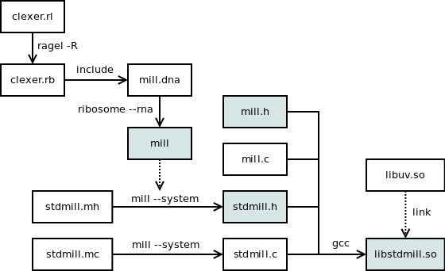

Source code is hosted on GitHub:
https://github.com/sustrik/mill
Source code of this website is located in gh-pages branch:
https://github.com/sustrik/mill/tree/gh-pages
If developing mill (as opposed to just using it) build it the following way.
First, install these prerequisites:
Then execute the following sequence commands:
$ ./autogen.sh $ ./configure --enable-gen $ make $ sudo make install
The files in the project are generated in the following way. Grey boxes represent target files (ones to be used by the end user):
'clexer.lr' is a file describing C tokens that is processed by Ragel to create C tokeniser. Use -R option when running Ragel to create Ruby version of the tokeniser. Note that there is no parser (except for a very simple one that does nothing but match pairs of braces -- also implemented in 'clexer.rl'). Being a simple tool, Mill does not attemp to do syntactic ananlysis of the source and relies fully on expanding lexical tokens.
'clexer.rb' is thus the source code of the tokeniser. It is included into mill.dna which means that an exact copy of the code appears in 'mill'
'mill.dna' is the source code of the Mill preprocessor. It's in essence a Ruby code with some fancy syntax for code generation. It is processed by ribosome (use --rna switch to avoid runtime dependency on ribosome) to create 'mill'.
'mill' is the C preprocessor itself. It is a Ruby program, however, for convenience's sake it has no .rb extension.
'mill.h' and 'mill.c' implement the core language runtime. The code from 'mill.c' goes into 'stdmill.so'. 'mill.h' header must be installed in the runtime because it is included by the C code generated by 'mill' preprocessor.
'stdmill.mh' and 'stdmill.mc' implement the library of elementary coroutines (timers, socket operations et c.) They have to be pre-processed by 'mill' (use --system switch to provide them with more flexibility) to yield actual library source code.
'stdmill.h' and 'stdmill.c' are generated from 'stdmill.mh' and 'stdmill.mc'. Along with 'mill.h' and 'mill.c' they are the source code for Mill runtime library.
'libstdmill.so' is Mill runtime library. It has to be installed everywhere where Mill programs are being run. The library uses 'libuv.so' to interface with the operating system.
Use GitHub bug tracker to report problems with nanomsg:
https://github.com/sustrik/mill/issues
To contribute to the project send your patch to the mailing list or, alternatively, send a GitHub pull request. In either case you have to state that your patch is submitted under MIT/X11 license, so that we can incorporate it into the mainline codebase.
If you make a substantial contribution to a file, add your copyright to the file header. Irrespective of whether you do so, your name will be added to the AUTHORS file to indicate you own copyright to a part of the codebase.